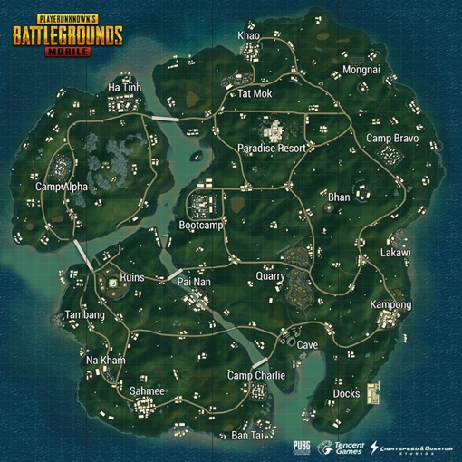

Arme PUBG
| Nume | Nivel de daune | Rată de foc | Capacitatea magazinului |
|---|---|---|---|
| AKM | 48 | 0.1 | 30 |
| M416 | 43 | 0.086 | 30 |
| UMP9 | 39 | 0.092 | 30 |
| SCAR-L | 43 | 0.096 | 30 |
| Vector | 31 | 0.055 | 13 |
| M16A4 | 43 | 0.075 | 30 |
| DP-28 | 51 | 0.109 | 47 |
| Mini14 | 46 | 0.1 | 20 |
| M24 | 79 | 1.8 | 5 |
| Kar98k | 75 | 1.9 | 5 |
| AWM | 120 | 1.85 | 5 |
| VSS | 41 | 0.086 | 10 |
Hărți POPULARE
-
Erangel

Harta Erangel din PUBG Mobile este o hartă vastă și interesantă, cu peisaje diversificate, de la câmpii deschise până la orașe aglomerate și zone militare periculoase, oferind o experiență de joc captivantă. De asemenea, mi se pare că harta are un nivel ridicat de detaliu și realism, fapt care contribuie la intensitatea jocului și la satisfacția jucătorilor.
-
Sanhok
Harta Sanhok din PUBG Mobile este o hartă compactă și plină de acțiune, cu multe zone de luptă în interiorul junglei și pe litoral. Mi se pare că harta este concepută pentru o experiență de joc mai rapidă și mai intensă, cu șanse mai mari de a întâlni dușmani și de a fi implicat în lupte la fiecare pas.
-
Miramar

Harta Miramar din PUBG Mobile este o hartă vastă și aridă, cu multe zone deschise și înalte, cum ar fi dealuri și munți, precum și orașe mari și mici. Impresia generală este că harta este concepută pentru o experiență de joc mai lentă și mai strategică, unde distanța și acoperirea sunt cheia supraviețuirii.